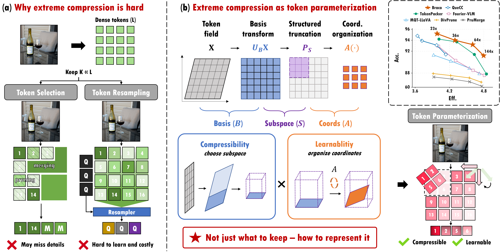
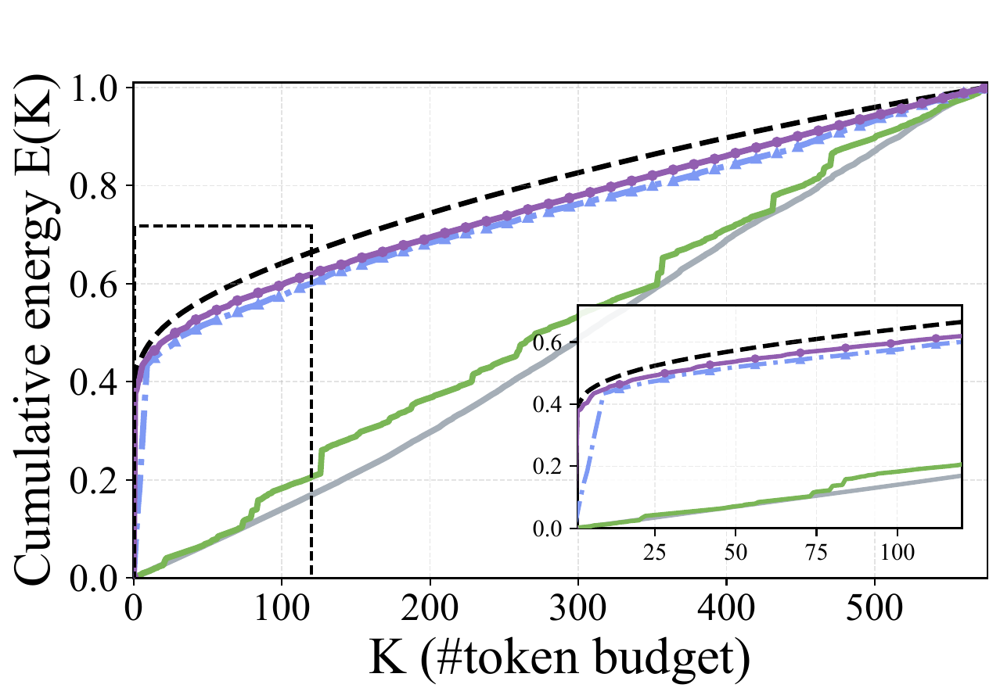
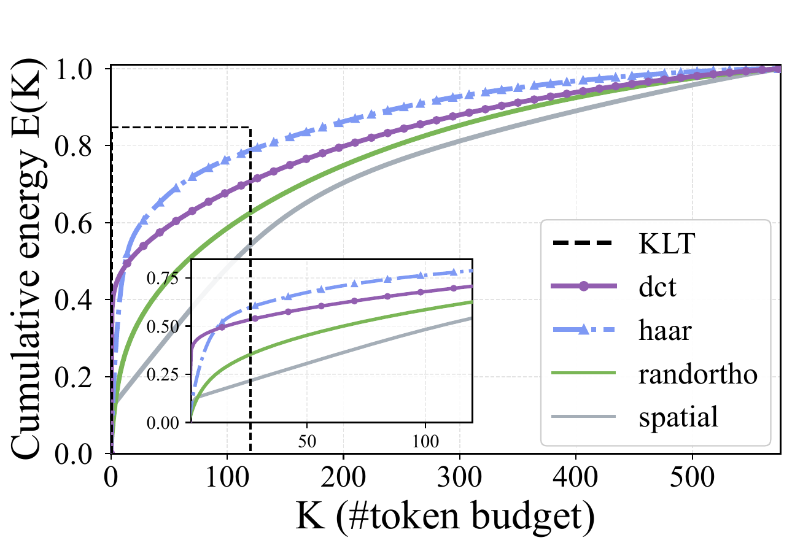
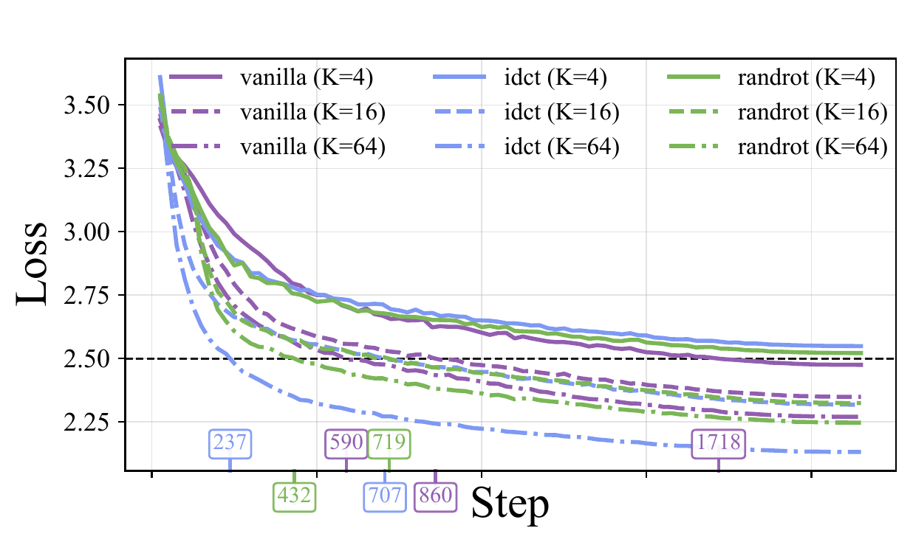
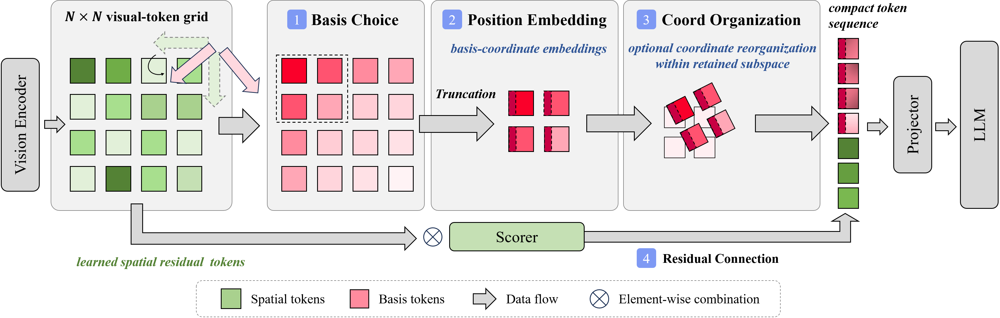

Beyond Selection: Token Parameterization for Extreme Visual Token Compression
NeurIPS 2026 (Spotlight)
Zhejiang University
* Corresponding author

Abstract
Visual-token compression is effective for improving the efficiency of vision-language models, but under extreme compression budgets, token pruning can break visual grounding while learned resamplers increase parameter count, attention cost, and training complexity. We revisit compression through a token parameterization lens, separating (i) basis transformation and structured truncation (retained subspace/compressibility) from (ii) coordinate organization (optimization and cross-modal alignment). This view yields two coupled objectives, compressibility and learnability, which we formalize as unified functionals. Guided by these objectives, we design Braco, a lightweight four-step coder that combines transform-basis truncation, input-independent basis-coordinate embeddings, budget-dependent orthogonal re-parameterization, and learned spatial residual tokens from lightweight pooling. Experiments show that Braco forms the favorable empirical accuracy-efficiency frontier under 23×–64× compression and remains competitive at 144×, reaching 95.2% accuracy while reducing prefill FLOPs by 84.2%–86.7% relative to the uncompressed upper bound. Against prior methods, Braco matches or improves accuracy while achieving up to a ∼36% end-to-end speedup and using 16.6×/78.8× lower compressor latency/FLOPs.
Token Parameterization
We introduce a token-parameterization view of extreme visual-token compression. For a visual-token field X, we parameterize the compressed representation Z through three choices:
The orthonormal basis B re-expresses the visual-token field, the structured set 𝒮 selects the retained transform coordinates, and the orthogonal matrix A reorganizes coordinates within that retained subspace.
Varying (B, 𝒮) tests information preservation, while varying A with (B, 𝒮) fixed tests optimization and alignment.
Compressibility and Learnability
Compressibility combines energy retention with task-direction readability to assess how much useful information survives a fixed, structured truncation. Learnability combines statistical conditioning with geometric compatibility to assess how well the retained coordinates support downstream optimization.



Basis choice determines what a small interface retains
Under structured truncation, DCT and Haar retain far more energy than spatial or random bases: approximately 0.51 versus 0.04 at 32 tokens, and 0.57 versus 0.08 at 64 tokens. The gap largely disappears under magnitude truncation, showing that the fixed, deployable ordering matters. KLT is an oracle reference fitted to the diagnostic token second moment.
CelebA linear probes additionally test task-readability on frozen patch tokens. DCT reaches 91.6% versus 89.8% for spatial coordinates at one token, and 92.5% versus 90.9% at four tokens. DCT gives the most favorable empirical combination of energy concentration, task readability, and implementation simplicity in these diagnostics.
The same retained information can be easier to learn
With the same low-frequency DCT subspace fixed, we vary only its coordinates: coefficient tokens, an inverse-DCT coarse spatial grid, or a random orthogonal rotation. At a backbone budget of four tokens, only coefficient coordinates reach the held-out development-loss target of 2.50. At 16 and 64 backbone tokens, inverse DCT reaches the target 18% and 60% faster, respectively.
These results agree with the learnability objective: coefficient coordinates are favored when statistical conditioning dominates at very small backbone budgets, while the coarse grid becomes preferable once geometric compatibility dominates.
Method
Guided by the compressibility and learnability analysis, Braco compresses visual tokens through four steps:

1. Basis Choice. Apply a 2D DCT to the visual-token lattice and apply structured truncation, concentrating task-relevant information into a compact transform-domain backbone.
2. Position Embedding. Add input-independent basis-coordinate embeddings to the retained transform tokens, providing stable indexing cues for downstream multimodal fusion.
3. Coordinate Organization. Represent the same retained subspace as coefficient tokens at very small backbone budgets, or as an inverse-DCT coarse spatial grid at larger budgets, balancing statistical conditioning and geometric compatibility.
4. Residual Connection. In parallel, generate a small set of learned spatial residual tokens through lightweight sparse pooling over the original spatial grid. Concatenate them with the backbone tokens to recover localized details beyond the backbone.
Main Results
Comparison under matched visual-token budgets
We now evaluate Braco end-to-end on LLaVA-1.5-7B across eight benchmarks under matched retained-token budgets. Braco attains the highest aggregate Acc. among the evaluated methods at 25, 16, and 9 tokens, and remains within 0.2 Acc. of QueCC at four tokens while using lower FLOPs and substantially lower latency. Across 4–25 tokens, it retains 91.2–95.2 Vanilla-normalized Acc. while reducing full-pipeline prefill FLOPs from 8.67T to 1.09–1.37T. At 16 and 9 tokens, Braco matches QueCC within 0.1 Acc. while reducing latency by about 36%.

Compressor cost at 16 tokens
Isolating the compression module, Braco matches QueCC's accuracy with 16.6× lower module latency and 78.8× fewer compressor FLOPs. Braco also achieves substantially lower post-projector FLOPs than TokenPacker and DivPrune.

BibTeX
@misc{zhong2026braco,
title = {Beyond Selection: Token Parameterization for Extreme Visual Token Compression},
author = {Zhong, Rui and Li, Yu and Yan, Zheyu and Zhuo, Cheng},
year = {2026},
eprint = {2609.35232},
archivePrefix = {arXiv},
primaryClass = {cs.CV},
url = {https://arxiv.org/abs/2609.35232}
}